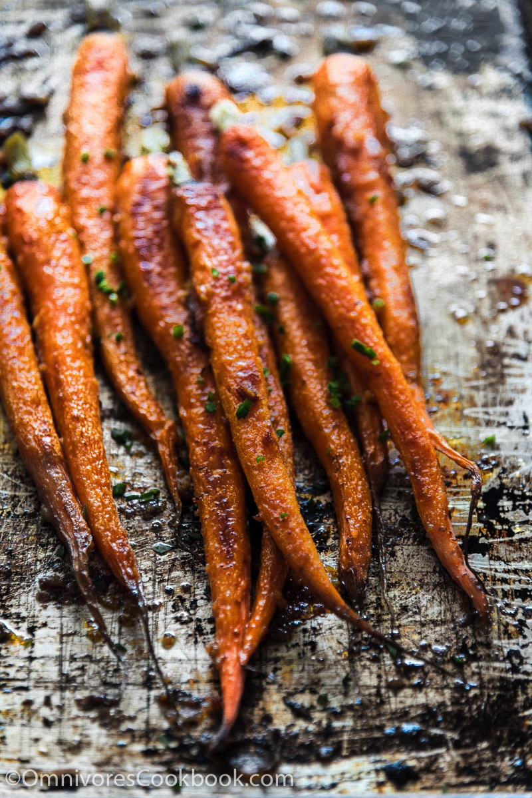
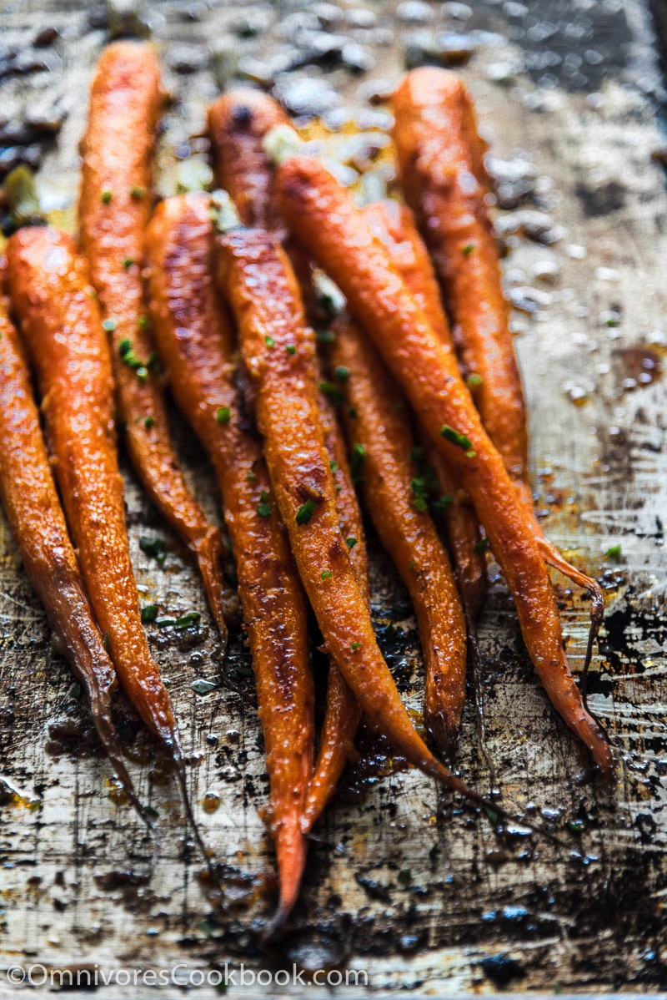
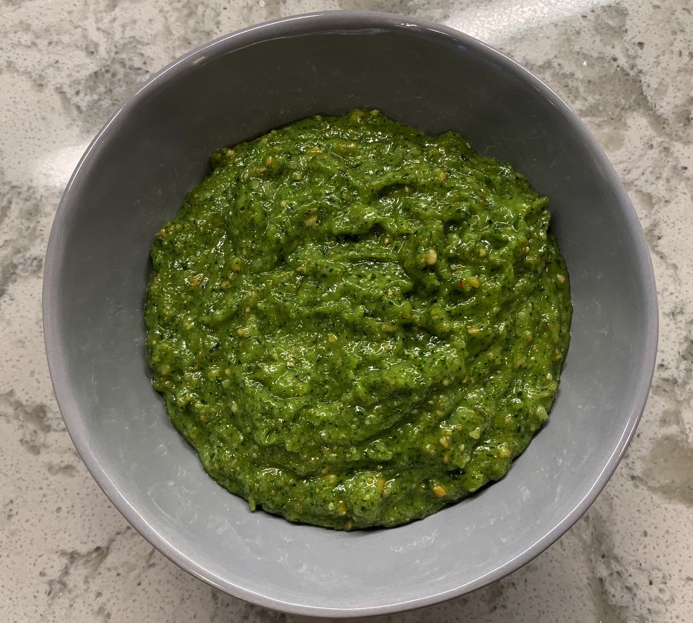

Miso-glazed Carrots

Ingredients
- 100g mild miso
- 30g balsamic vinegar
- 65g honey
- 20g maple syrup
- 20g rice vinegar
Steps
S&p and olive oil the cut carrots and put in 375 oven for 25m.

S&p and olive oil the cut carrots and put in 375 oven for 25m.

Dredge each piece of chicken in flour that is salted and peppered(not a lot just a bit of each) shake off any excess flour.
On medium heat, pan sauté each piece in a combo of olive oil and butter/ margarine till just golden on each side. Set aside on a plate.
After all chicken pieces are sautéed, add more butter or margarine and sauté all the mushrooms stirring occasionally till they are caramelized. Then add a bit of salt and pepper.
Now add about 1/2 the bottle of Marsala wine and let simmer w the shrooms for a few mins. Then add about 1/2 c of the chicken stock and a tbls or so of butter. Whisk all together.
Taste to see if needs more wine and more salt and pepper. At this point, you can add some corn starch mixed w a little cold water if you like the sauce thick, but I don't. Pour juices from plate of chicken in the pan and add back the chicken pieces.
Preheat oven to 250°. Lightly beat eggs, cinnamon, milk, sugar, and salt in a large shallow baking dish (a lasagna pan is perfect). Add bread, turn to coat, then press down gently on bread until you feel it start to soak up custard mixture—this is key for a luscious, not dry, texture. Let soak, 10 minutes.
Flip bread and soak on second side, pressing down gently from time to time, until bread is saturated but not soggy, another 10 minutes or so.
Heat 1 Tbsp. butter and 1 Tbsp. oil in a large skillet over medium heat. When foaming subsides, carefully lift 3 slices of bread from custard, letting excess drip back into dish, and cook in skillet until golden brown and center of toast springs back when pressed, about 2 minutes per side. Transfer toast to a wire rack set inside a rimmed baking sheet and keep warm in oven while you cook remaining slices of bread with 1 Tbsp. butter and remaining 1 Tbsp. oil.
Serve French toast with butter, maple syrup, jam, and/or powdered sugar.
Pull apart rotisserie chicken meat.
Combine all ingredients. Let chill for at least 30 minutes in fridge.

In the food processor, process garlic, then add almonds until smooth(ish).
While still processing, add vinegar and oil slowly.
Add cheese slowly until smooth. Taste, and add salt and pepper.
Note: If it's not getting smooth enough, add more oil and/or balsamic.

On medium-high heat, put tomatoes, red wine, oregano, and basil in pot
Taste sauce, add salt and pepper accordingly (or more herbs)
Boil pasta
4.. Add shrimp to sauce, let cook until shrimp turn pink. Add broken up feta and stir in.

Preheat oven to 325.
Rub all over chicken. Under skin and both sides. If whole hen also inside the cavity. Let sit in fridge for an hour at least.
Bring chicken back to room temp.
Coat with sauce. Squeeze a bit more lemon juice over all and sprinkle with a bit more brown sugar.
Bake slow on that low temp for 1hr 45 mins to 2 1/2 hours depending on oven. Baste during cooking. Can broil at the end to crisp skin.
Two tablespoons veggie oil 2 Eggs room temp One whole bag matzo ball mix
PRE) Prep water with about 2-3 inches of water and a soup mix. Get to simmering


Mix all the ingredients for the marinade in a large bowl.
Place the salmon in the bowl, skin side up. Spoon marinade and coat the salmon skin. Cover and keep in the refrigerator for 30 minutes to 1 hour. I don’t recommend longer than that as miso is quite salty.
Set the oven broiler to high and preheat for 3 minutes. Place the salmon fillets on the baking sheet lined with parchment paper. Remove excess marinade from the salmon as miso gets burnt easily while cooking. Broil salmon for 10-12 minutes, depending on the thickness, until salmon is cooked through.